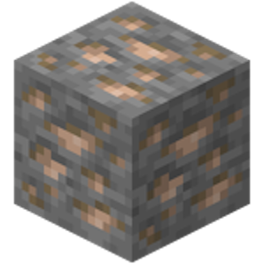
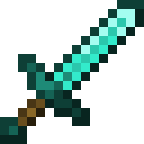
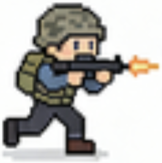

Intention abstraction
Condense verbose instructions into compact semantic primitives, generated offline by zero-shot Qwen2-VL-7B.
[waypoint, safezone]See IA evidence ↗Sparse intent. Structured affordances. Aligned action supervision.
Intention and environment abstractions expose task-relevant concepts, such as walls and enemies, to guide action supervision.
Dynamic 3D games confront an agent with dense visual observations and context-dependent actions. 3A-VLA adds two compact auxiliary targets to action learning: intention abstraction (IA), which captures the goal and strategy, and environment semantics abstraction (ESA), which captures task-relevant scene structure. Abstraction alignment reweighting (AAR) uses their relation to adapt the action-imitation loss.
Six-task average SR
Macro-average across three groups
53.4% → 66.4%
Qwen2-VL-7B · IA + ESA + AAR
One shared causal Transformer learns actions together with IA and ESA targets. AAR reweights action supervision using their relation. At deployment, only the action chunk is decoded.
Move across the signals or tap a brain region to explore.
The original image and “Shoot the nearby enemy.” enter one shared model. Keywords and semantic regions are outputs, not inputs.
IA and ESA guide action learning during training. At deployment, the policy decodes actions.
Condense verbose instructions into compact semantic primitives, generated offline by zero-shot Qwen2-VL-7B.
[waypoint, safezone]See IA evidence ↗Pool scene categories into an 8 × 8 grid, retaining top-K tactical classes per cell using an off-the-shelf SegFormer-B2.
person · vehicle · cover · item · otherSee ESA evidence ↗Learn batch-relative action weights from the relation between IA and ESA, with an entropy regularizer and stop-gradient.
Action loss × alignment weightSee AAR evidence ↗| Model | Size |  Embodied steps | Embodied Mini SR | Embodied All SR |  Combat steps | Combat Mini SR | Combat All SR | GUI steps | GUI Mini SR | GUI All SR |
|---|---|---|---|---|---|---|---|---|---|---|
| VPT | 248M | 377 | 10.1 ± 2.8 | 6.0 ± 1.4 | 396 | 3.6 ± 1.5 | 3.6 ± 1.2 | 398 | 0.7 ± 0.1 | 0.8 ± 0.3 |
| STEVE-1 | 248M | 384 | 8.4 ± 2.4 | 8.0 ± 1.8 | 395 | 4.9 ± 1.4 | 3.9 ± 1.1 | 391 | 0.0 | 3.2 ± 1.3 |
| ROCKET-1 | 72B | 392 | 19.2 ± 3.5 | 18.9 ± 3.6 | 320 | 29.8 ± 4.2 | 27.9 ± 4.8 | - | - | - |
| JARVIS-VLA | 7B | 305 | 31.0 ± 4.9 | 30.0 ± 5.3 | 352 | 18.3 ± 3.1 | 18.5 ± 3.6 | 339 | 25.3 ± 4.2 | 25.1 ± 4.5 |
| OpenHA | 7B | 287 | 37.0 ± 5.8 | 30.1 ± 4.9 | 316 | 40.0 ± 6.1 | 31.9 ± 5.2 | 314 | 33.3 ± 5.0 | 32.5 ± 5.3 |
| 3A-VLA | 7B | 278 | 40.6 ± 3.2 | 33.5 ± 2.6 | 271 | 45.9 ± 3.5 | 35.4 ± 2.9 | 307 | 34.7 ± 2.7 | 34.8 ± 2.6 |
Compare success rates and environment steps across Mini and All tasks.
| Model | Parachuting | Scavenging |  Combat | Revival | Vehicle | Rotation | Average | Latency (s) |
|---|---|---|---|---|---|---|---|---|
| GPT-4o | 41.4 | 31.4 | 18.6 | 47.1 | 38.6 | 40.0 | 36.2 | 1.6 |
| Claude-3.7-Sonnet | 48.6 | 38.6 | 24.3 | 57.1 | 41.4 | 45.7 | 42.6 | 2.2 |
| Gemini-2.5-Pro | 55.7 | 42.8 | 25.7 | 58.6 | 47.1 | 51.4 | 46.9 | 1.5 |
| Qwen2-VL-7B | 22.9 | 15.7 | 8.6 | 27.1 | 18.6 | 21.4 | 19.1 | 1.1 |
| Qwen2-VL-7B (Vanilla IL) | 54.3 | 48.6 | 44.3 | 68.6 | 51.4 | 52.9 | 53.4 | 1.1 |
| Qwen2-VL-7B (IL + CoT) | 55.3 | 49.1 | 45.7 | 68.1 | 53.1 | 53.9 | 54.2 | 1.1 |
| Qwen2-VL-7B (IL + Image caption) | 56.0 | 50.4 | 46.3 | 68.7 | 53.4 | 54.3 | 54.9 | 1.1 |
| Qwen2-VL-7B (IL + CoT + Caption) | 56.3 | 50.9 | 46.8 | 69.3 | 53.7 | 55.0 | 55.3 | 1.1 |
| 3A-VLA (Ours) | 66.1 | 60.5 | 67.1 | 70.2 | 68.9 | 65.7 | 66.4 | 1.1 |
SR (%) for parachuting, scavenging, combat, revival, vehicle acquisition and rotation. Latency is in seconds; the default policy uses zero-shot Qwen2-VL-7B IA and SegFormer-B2 ESA.
The Minecraft and GP policies are fine-tuned separately on 50 h and 200 h of data. Main-table latency is 1.1 s per step on one L40S.
Component controls, weighting controls and visual evidence.
IA, ESA and AAR progressively concentrate attention on task-relevant regions. The paper’s first example reduces attention entropy from 7.58 to 3.42.
@inproceedings{zhou20263avla,
title={3A-VLA: Abstraction-Aligned Action Learning for Vision-Language Agents in 3D Game Worlds},
author={Zhou, Zheyuan and Du, Liang and Sun, Zixun and Zhou, Xiaoyu and Ye, Ruimin and Chen, Qihao and Chen, Yinda and Qiu, Lemiao},
booktitle={Advances in Neural Information Processing Systems},
year={2026}
}